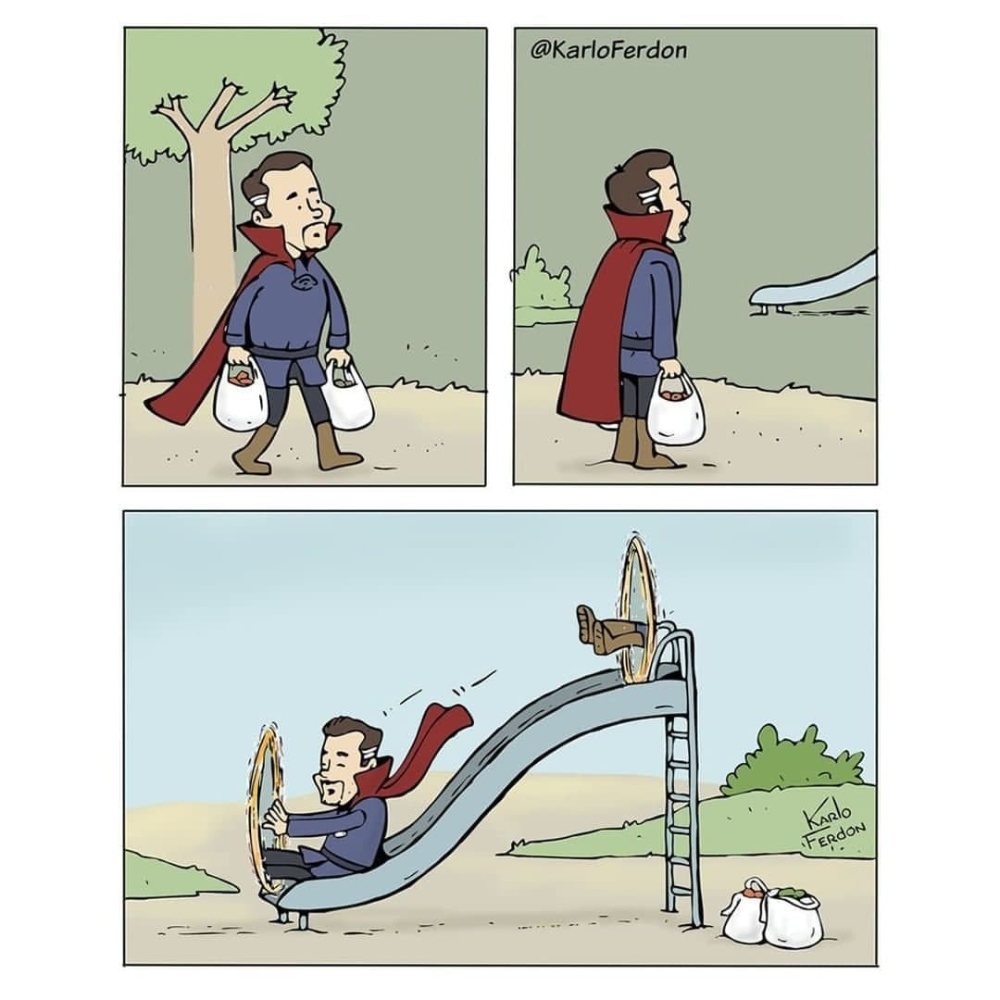
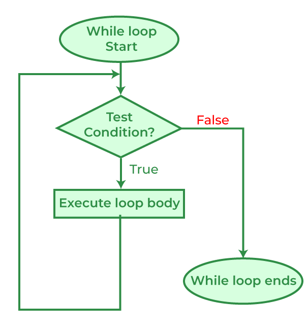
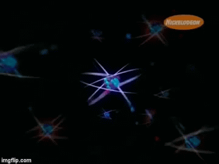
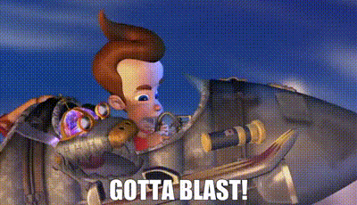
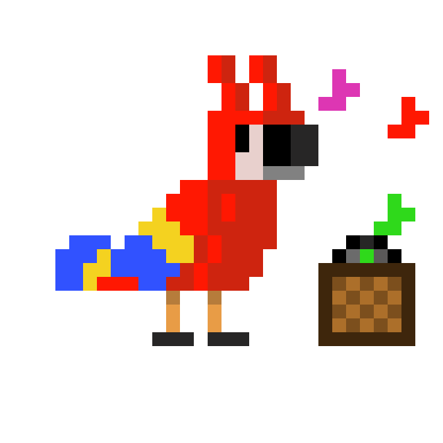
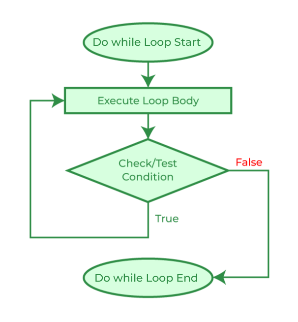
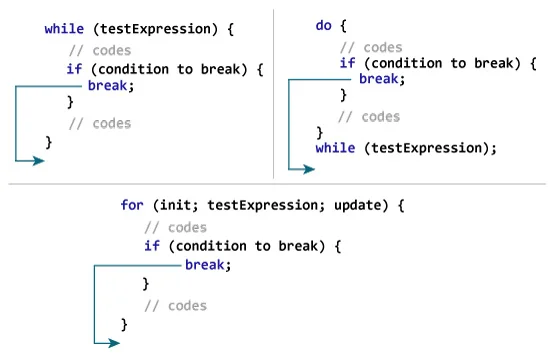
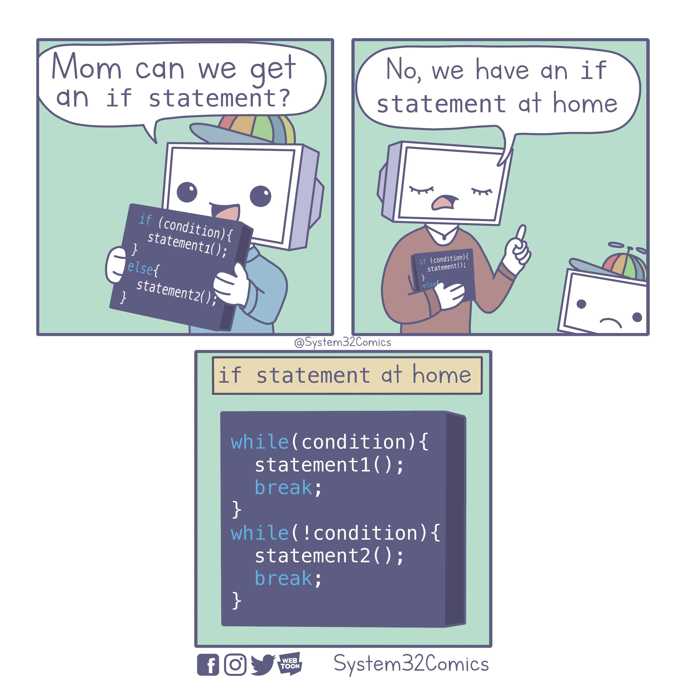
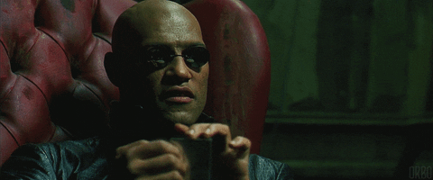

Fullscreen mode
Just press »F« on your keyboard to show your presentation in fullscreen mode. Press the »ESC« key to exit fullscreen mode.
Overview mode
Press "Esc" or "o" keys to toggle the overview mode on and off. While you're in this mode, you can still navigate between slides, as if you were at 1,000 feet above your presentation.
Python and The Basics of Programming.
Loops (while, do-while, for)
Lesson 3
Author: Egoshkin Danila Igorevich
What are the Loops?

Loops

We will ride the slide until we get bored.
When we do some action(s) while(until) some condition is true (we do not get bored)
When we do some action(s) while(until) some condition is true (we do not get bored)
Loops
There are three types of loops:while, do-while, for, foreach
An some special:
recursion
Loops: while
while(condition == true)
{
// Do some actions here if "condition == true"
// It will repeat actions if "condition == true"
}
Loops: while
Loops: while
Examples: Gotta Blast, Parrot
Loops: while
Example: Gotta Blast

int main()
{
int i = 3;
while (i > 0) { // 3 2 1
cout << i << endl;
i--; // i = i - 1;
}
cout << "Gotta Blast!" << endl;
}
Loops: while
Example: Parrot

int main() {
char str[100] = "";
cout << "Here is a Parrot, say something: ";
cin.getline(str, 100);
// strcmp = 0 - performs a case-sensitive comparison of two strings.
// stricmp = 0 - performs a non-case-sensitive comparison of two strings.
while (_stricmp(str, "bye") != 0 &&
_stricmp(str, "goodbye") != 0) {
cout << "- Parrot: " << str << endl;
cout << "- You: ";
cin.getline(str, 100);
}
cout << "- Parrot: Bye Bye, Goodbye!";
} Loops: Nested loops - Nested while
A nested loop means a loop statement inside another loop statement. That is why nested loops are also called “loop inside loops“.Like with If..Else inside If..Else
while(condition1 == true) // 1D
{
while(condition2 == true) // 2D
{
while(condition3 == true) // 3D
{
... // ToDo
}
}
}
Loops: do-while
do
{
// Do some actions here.
// It will make action first
// and only then will think repeat it
// in "while" if "condition == true"
// or not
}
while(condition == true)
Loops: do-while
Loops: while vs do-while

Loops: do-while in Python???
Is there a do-while loop in Python?
Loops: break and continue (and Python`s Pass)
Break and continue
The break and continue statements in Python are used to skip parts of the current loop or break out of the loop completely.Break
Continue
.gif)
Pass
The pass statement can be used to fill in code initially that could be used in the future. It may sound silly to use the pass statement in parts of the code that would be deleted anyway later, but it proves to be very useful in the initial stages of development for faster development.ToDo
while and if
while and else
while counter < 3:
pass
else:
pass
Loops: for vs while
What is the difference?
WHILE
int i = 0;
while(i < 10)
{
std::cout << i << " ";
i++; // i = i + 1;
}
FOR
for(int i = 0; i < 10; i++) {
std::cout << i << " ";
}
Loops: for in Python
For style by range
FOR C++
for(int i = 0; i < 10; i++) {
std::cout << i << " ";
}
FOR Python
for x in range(10):
print(x)
Loops: for in Python
For with start point
FOR C++
for(int i = 5; i < 10; i++) {
std::cout << i << " ";
}
FOR Python
for x in range(5, 10):
print(x)
Loops: for in Python
For with user step
FOR C++
for(int i = 0; i < 10; i+=3) {
std::cout << i << " ";
}
FOR Python
for x in range(0, 10, 3):
print(x)
Are there new ideas?
(About the difference between for and while) Loops: for in Python
FOR C++
for (int i = 1; i <= 10; i++) {
std::cout << i << " ";
i = i * 2;
}
FOR Python
???
It is artificial example
Loops: for in Python
FOR C++
for(int i = 1; i <= 10; i++) {
if(i % 2 == 1)
i+=3;
if(names[i] == "John")
i+=3;
}
FOR Python
???
But...
Loops: for == foreach in Python
foreach thought for
int main()
{
int myint[] = {1, 2, 3, 4, 5};
for (int i : myint)
{
std::cout << i << '\n';
}
}
#include <iostream>
#include <algorithm> // contains std::for_each
#include <vector>
int main()
{
std::vector<int> v {1, 2, 3, 4, 5};
std::for_each(v.begin(), v.end(), [](int i)
{
std::cout << i << '\n';
});
std::cout << "reversed but skip 2 elements:\n";
std::for_each(v.rbegin()+2, v.rend(), [](int i)
{
std::cout << i << '\n';
});
}
FOR
for character in "Python":
print(character)
programming_languages = ["Python", "JavaScript", "Java", "C++"]
# ітерація над кожним елементом всередині списку
for language in programming_languages:
print(language)
Links: